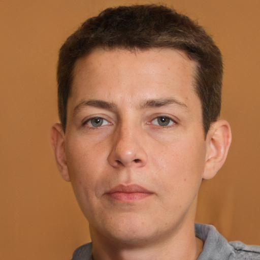
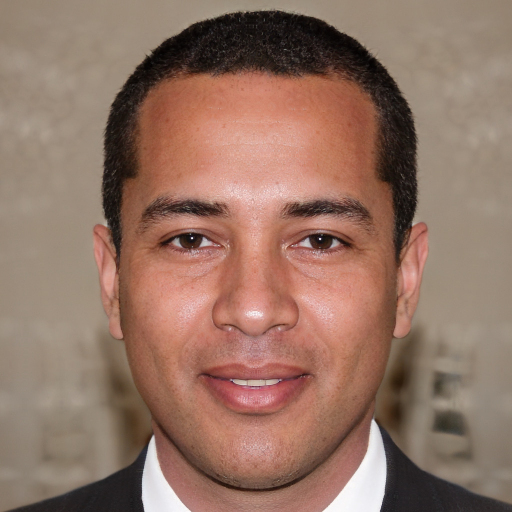
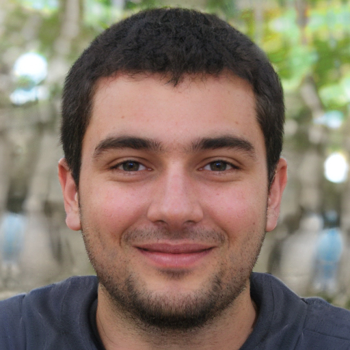

Welcome to Our Faculty!
Here you can find information about our faculty members, their expertise, and their research interests. Feel free to explore and learn more about the talented individuals who make up our academic community.

Professor 1: Dr. John Doe - Expert in Computer Science and Artificial Intelligence.
Professor 2: Dr. El Monstro Smith Morjene - Specializes in Data Science and Machine Learning and camouflage.
Professor 3: Dr. Emily Johnson - Focuses on Software Engineering and Cybersecurity.


Professor 4: Dr. Michael Brown - Researcher in Human-Computer Interaction and User Experience Design.
Professor 5: Dr. Sarah Davis - Specializes in Computer Networks and Distributed Systems.
Professor 6: Dr. David Wilson - Focuses on Software Development and Agile Methodologies.